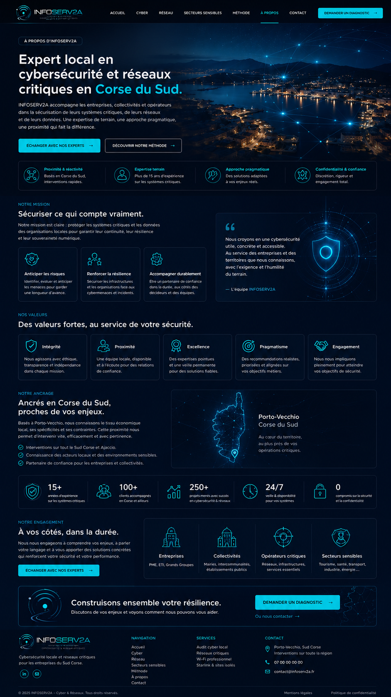

Anticiper les risques
Identifier, évaluer et anticiper les menaces pour garder une longueur d’avance.

À propos d’INFOSERV2A
INFOSERV2A accompagne les entreprises, collectivités et opérateurs dans la sécurisation de leurs systèmes critiques, de leurs réseaux et de leurs données. Une expertise de terrain, une approche pragmatique, une proximité qui fait la différence.
Notre mission
Notre mission est claire : protéger les systèmes critiques et les données des organisations locales pour garantir leur continuité, leur résilience et leur souveraineté numérique.
Identifier, évaluer et anticiper les menaces pour garder une longueur d’avance.
Sécuriser les infrastructures et les organisations face aux cybermenaces et incidents.
Être un partenaire de confiance dans la durée, aux côtés des décideurs et des équipes.
Nous croyons en une cybersécurité utile, concrète et accessible. Au service des entreprises et des territoires que nous connaissons, avec l’exigence et l’humilité du terrain.
Nos valeurs
Nous agissons avec éthique, transparence et indépendance dans chaque mission.
Une équipe locale, disponible et à l’écoute pour des relations de confiance.
Des expertises pointues et une veille permanente pour des solutions fiables.
Des recommandations réalistes, priorisées et alignées sur vos objectifs métiers.
Nous nous impliquons pleinement pour atteindre vos objectifs de sécurité.
Ancrage
Basés à Porto-Vecchio, nous connaissons le tissu économique local, ses spécificités et ses contraintes. Cette proximité nous permet d’intervenir vite, efficacement et avec pertinence.
Notre engagement
Nous nous engageons à comprendre vos enjeux, à parler votre langage et à vous apporter des solutions concrètes qui renforcent votre sécurité et votre performance.
Échanger avec nos expertsPME, ETI, Grands Groupes.
Mairies, intercommunalités, établissements publics.
Réseaux, infrastructures, services essentiels.
Tourisme, santé, transport, industrie, énergie…
Discutons de vos enjeux et voyons comment nous pouvons vous aider.